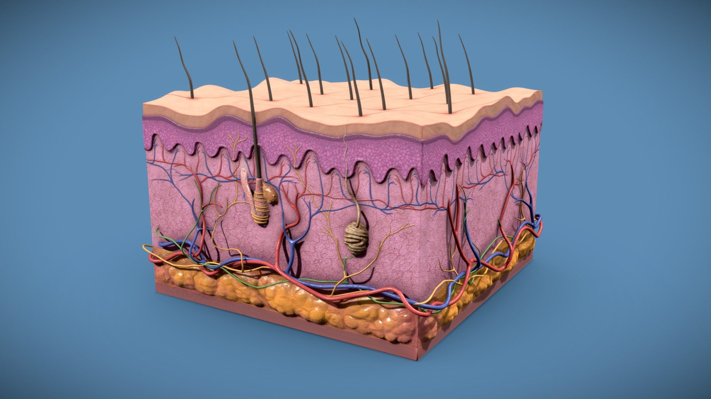

Cilt Sistemi

Cilt sistemi, vücudu dış etkenlerden koruyan ve vücudu tamamen saran en büyük organdır.
Cilt; terleme, duyuları algılama ve vücut ısısını düzenleme gibi hayati görevler üstlenir.
Cilt Sisteminin Görevleri
- Vücudu mikroplardan ve zararlı maddelerden korumak
- Vücut ısısını dengelemek
- Dokunma, sıcaklık ve acıyı algılamak
- Terleme ile atık maddeleri vücuttan uzaklaştırmak
- Güneş ışınlarına karşı koruma sağlamak
Cildin Yapısı
- Üst Deri (Epidermis): En dış tabaka, koruyucudur
- Alt Deri (Dermis): Sinirler ve kan damarları bulunur
- Deri Altı Yağ Tabakası: Isı yalıtımı sağlar
Cilt Sisteminin Önemi
Cilt sistemi olmasaydı vücut dış etkenlere karşı savunmasız kalır, ısı dengesi bozulur ve yaşam zorlaşırdı.
Kısa Özet
Cilt sistemi, vücudu koruyan, duyuları sağlayan ve dengeyi koruyan hayati bir sistemdir.
← Ana Sayfaya Dön